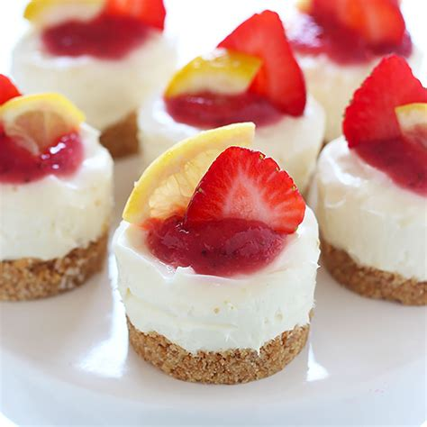
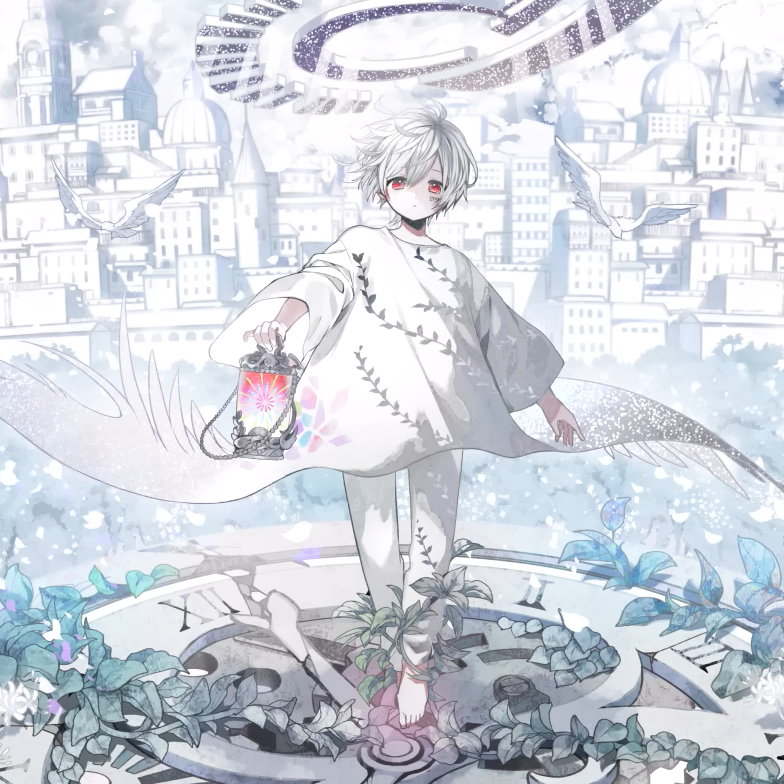

<ion-header [translucent]="true">
  <ion-toolbar>
    <ion-buttons slot="start">
      <ion-button (click)="setShow('chat')">
        <ion-icon slot="icon-only" name="chatbubble-ellipses"></ion-icon>
      </ion-button>
    </ion-buttons>

    <ion-title>
      {{getLabel('tab3')}}
    </ion-title>

    <ion-buttons slot="end">
      <ion-button (click)="resetCourses()">
        <ion-icon slot="icon-only" name="game-controller"></ion-icon>
      </ion-button>
    </ion-buttons>
  </ion-toolbar>
</ion-header>

<ion-content [fullscreen]="true">
  <ion-header collapse="condense">
    <ion-toolbar>
      <ion-title size="large">Tab 3</ion-title>
    </ion-toolbar>
  </ion-header>

  <!-- <app-explore-container name="Tab 3 page"></app-explore-container> -->

  <ion-button  fill="outline" expand="full">August 12</ion-button>
  
  <div style="text-align: center">
    <ion-chip *ngFor="let m of moods" color="{{checkMood(m)}}" (click)="changeMood(m.name)">
      {{m.name}}
      <ion-icon name="{{m.icon}}"></ion-icon>
    </ion-chip>
    <!-- <ion-chip>Worried 😥</ion-chip> -->
  </div>

  <ion-button expand="full" fill="outline" (click)="tooglePast()">
    <span *ngIf="!showPast"> Show Past Events</span>
    <span *ngIf="showPast"> Show Upcoming Events</span>
  </ion-button>

  <div *ngIf="show=='chat'">
    <ion-item lines="none" color="clear">
      <ion-avatar></ion-avatar>
      <ion-item color="clear">Hello</ion-item>
    </ion-item>
    <ion-item lines="none" color="clear">
      <ion-item slot="end" color="clear">Hello!</ion-item>
      <ion-avatar slot="end"></ion-avatar>
    </ion-item>
  </div>

  <ion-card *ngFor="let c of courses; let i = index" (click)="removeCourse(i)">
    <ion-item lines="none" color="{{colorCourse(c)}}">
      {{getCourse(c)}}
    </ion-item>
  </ion-card>


 
  <!-- <ion-button color="tertiary" fill="outline">August 13</ion-button> -->
  
  <div *ngFor="let d of dates">
    <ion-grid *ngIf="checkEvents(d.date)">
      <ion-row>
        <ion-col size="auto">
          <ion-button (click)="setActive(d)">
            {{dateToString(d.date)}}
          </ion-button>
        </ion-col>
        <ion-col style="background-color:rgba(250, 235, 215, 0.385); border: white 1px solid; border-radius: 25px;">
          <span *ngFor="let e of getEventsByID(d.eventIDs);" style="width:max-content;">
            <ion-chip (click)="e.active = !e.active">{{e.what}}</ion-chip>
          </span>
        </ion-col>
      </ion-row>  
    </ion-grid>

    <div style="height:max-content; max-height: 300px; overflow:scroll">
      <div *ngFor="let e of getEventsByID(d.eventIDs);">
        <ion-card color="clear" *ngIf="e.active">
          <ion-item color="secondary" lines="none" (click)="e.active = !e.active">
            {{e.what}}
            <ion-badge color="clear" slot="end">{{dateToString(e.date)}}</ion-badge>
          </ion-item>
          <ion-item *ngIf="checkInfoValdity(e, 'who')">
            <ion-chip color="secondary">Who?</ion-chip> {{e.who}}
          </ion-item>
          <ion-item *ngIf="checkInfoValdity(e, 'where')">
            <ion-chip color="secondary">Where?</ion-chip> {{e.where}}
          </ion-item>
          <ion-item *ngIf="checkInfoValdity(e, 'time')">
            <ion-chip color="secondary">When?</ion-chip> {{e.time}}
          </ion-item>
        </ion-card>
      </div>
    </div>
    <!-- <br>   -->
  </div>

  <ion-button expand="full" fill="outline" *ngIf="!showPast">
    <ion-icon name="add"></ion-icon>
    Add Event
  </ion-button>
  
  <!-- <ion-card color="clear" *ngFor="let e of events">
    <ion-item color="secondary" lines="none" (click)="e.active = !e.active">
      {{e.what}}
      <ion-badge color="clear" slot="end">{{e.date}}</ion-badge>
    </ion-item>
    <ion-item *ngIf="checkInfoValdity(e, 'who')">
      <ion-chip color="secondary">Who?</ion-chip> {{e.who}}
    </ion-item>
    <ion-item *ngIf="checkInfoValdity(e, 'where')">
      <ion-chip color="secondary">Where?</ion-chip> {{e.where}}
    </ion-item>
    <ion-item *ngIf="checkInfoValdity(e, 'time')">
      <ion-chip color="secondary">When?</ion-chip> {{e.time}}
    </ion-item>
  </ion-card> -->

  
  <!-- <ion-card color="clear">
    <ion-item color="secondary" lines="none">
      Movies
      <ion-badge color="clear" slot="end">Aug 06 2022</ion-badge>
    </ion-item>
    <ion-item >
      <ion-chip color="secondary">Who?</ion-chip>
      Sareina, Melissa, Xaria, Kianna
    </ion-item>
    <ion-item>
      <ion-chip color="secondary">Where?</ion-chip> Limegrove
    </ion-item>
    <ion-item>
      <ion-chip color="secondary">When?</ion-chip> 4:30 PM
    </ion-item>
  </ion-card> -->

  <!-- <ion-card color="clear">
    <ion-item color="secondary" lines="none">
      Birthday Party -->
      <!-- <ion-chip slot="end">2022</ion-chip> -->
      <!-- <ion-badge color="clear" slot="end">2022</ion-badge> -->
      <!-- <ion-badge color="clear" slot="end">Aug 12 2022</ion-badge>
    </ion-item> -->
    <!-- <ion-item >
      <ion-chip>Who?</ion-chip> Sareina
    </ion-item>
    <ion-item>
      <ion-chip>Where?</ion-chip> Zoom
    </ion-item>
    <ion-item>
      <ion-chip>When?</ion-chip> 2:00 PM
    </ion-item> -->
  <!-- </ion-card> -->

  <!-- <ion-card>
    <ion-item>
      <ion-chip> Movies </ion-chip>
      <ion-chip slot="end">06/08/2022</ion-chip> -->
      <!-- <ion-badge slot="end">13/08/2022</ion-badge> -->
    <!-- </ion-item>
  </ion-card> -->

  <ion-fab vertical="bottom" horizontal="center" edge slot="fixed">
    <ion-fab-button color="light" [routerLink]="['/profile']">
      <ion-icon name="person"></ion-icon>
      
    </ion-fab-button>
  </ion-fab>
</ion-content>

<ion-footer>
  <ion-toolbar>
    <ion-buttons slot="start">
      <ion-button>
        <ion-icon slot="icon-only" name="information-circle"></ion-icon>
      </ion-button>
    </ion-buttons>

    <ion-buttons slot="end">
      <ion-button>
        <ion-icon slot="icon-only" name="airplane"></ion-icon>
      </ion-button>
    </ion-buttons>
  </ion-toolbar>
</ion-footer>
